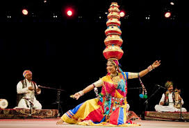
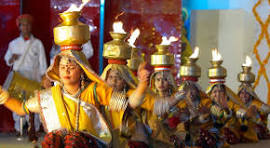
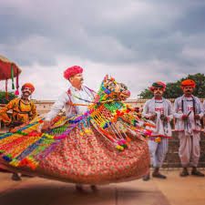
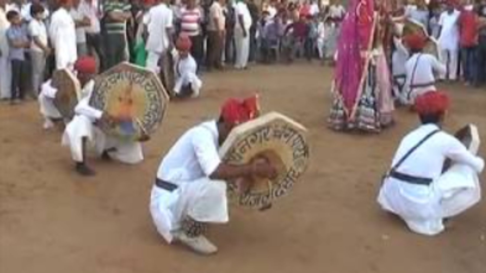
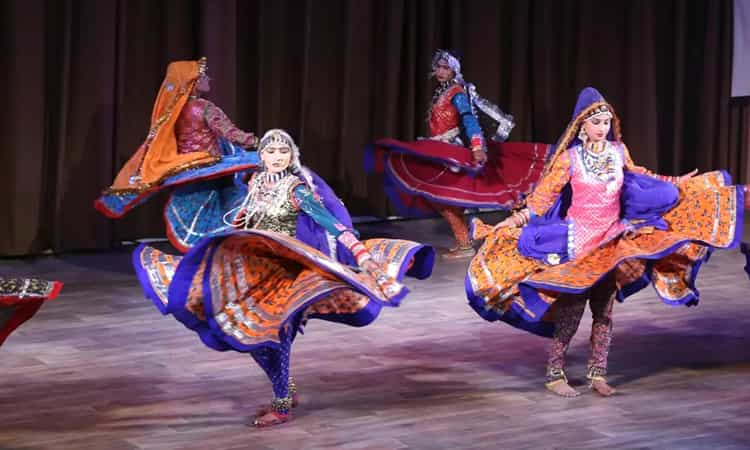
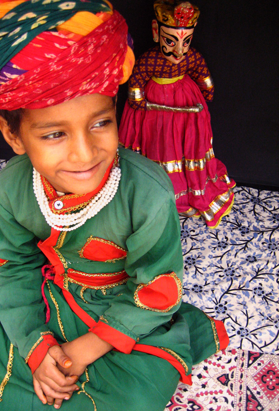
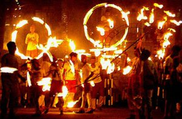
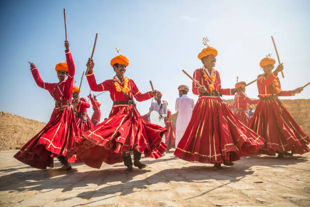

The rhythmic movements, colorful attire, and lively music create an enchanting atmosphere that captivates the audience. The dancers, adorned in traditional costumes, bring the folklore of Rajasthan to life, moving gracefully to the beats of instruments like the dhol, nagada, and manjira. Their performances are a blend of energy and elegance, often accompanied by soulful singing that resonates with the spirit of the desert. Folk dances in Rajasthan are as diverse as the state itself, with each region having its unique style and form. Whether it's the Ghoomar, with its swirling skirts and elegant movements, or the Kalbelia, known for its swift, snake-like gestures, each dance is a celebration of life and culture. showcase the remarkable skill and endurance of the performers.
Folk Dance

Bhavai dance

Chari dance

Kachhi Ghodi dance

Terah Taali dance

Gair dance

Chakri dance

Kathputli

Agni dance
